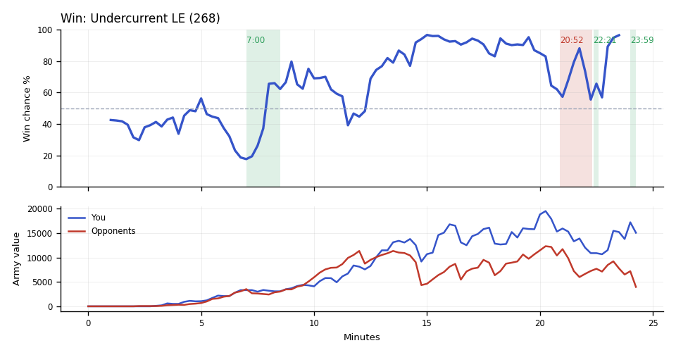

Win. You won because you went into the last fight before the first gg, at TakeTheTip's fourth, 1.4x ahead.
Why
13:24–14:50: Scallop's Siege Tanks and TakeTheTip's Ultralisks beat both armies at Scallop's fourth; hazing's army fell to about 1,700.
20:34–22:28: Scallop's Battlecruisers killed SCVs and Vikings; unseen, DemonoiD's workers halved by 22:00, with about 3,700 minerals unspent, leaving DemonoiD's army far behind Scallop's.
21:13–21:33: Scallop's Siege Tanks and TakeTheTip's Ultralisks killed 63 Marines at TakeTheTip's fourth; DemonoiD typed gg.
Try next game
TakeTheTip: When Liberators show on screen or minimap, put two Spore Crawlers in each mineral line; the fourth had none finished at 20:16. Check: 2 Spore Crawlers finished at the fourth by 20:00.

Written by claude-sonnet-5-5 from the replay fact sheet.
Win. The game turned at 7:00 when you won a fight (4,400 killed, 3,075 lost). The biggest fight came at 20:52–22:19 (12,650 lost, 17,025 killed).
Team MMR 3723 vs 3906 against DemonoiD (Terran), hazing (Protoss). Starting win chance 42%.
Try next game
TakeTheTip: answer Colossuses with Corruptors/Vipers. Check: at least 3 of those within two minutes of their first Colossus.
TakeTheTip: around 20:26, when their army heads to your bases, send the team's army back early or pull workers; check: fewer than 5 workers lost.
TakeTheTip: you had 7,125 unspent at 17:45; add production or a base whenever unspent passes 1,000. Check: under 1,000 at every minute mark after 8:00.
Turning points
7:00–8:29: you won a fight (4,400 killed, 3,075 lost). Win chance 18% to 67%.
You killed 29 enemy workers (19 of them DemonoiD's), with Banshees (29 kills).
Fighting: you lost 2,675 of army and killed 2,850 of theirs. Going in, your armies were worth 3,325 against their 3,525.
Your losses: 35 Zerglings, 3 Banshees, 7 Hellions, 2 Queens; killed mostly by Marines (26 kills), Stalkers (12).
Their losses: 8 Stalkers, 17 Marines, 6 Zealots.
Buildings destroyed: yours worth 300, theirs 100.
What moved the win chance: economy +29%, tech +15%, army +12%, spending -2%
20:52–22:19: TakeTheTip lost 46 Drones to Archons, Liberators and Stalkers, even though the fighting went your way (17,025 killed, 12,650 lost). Win chance 62% to 57%.
TakeTheTip lost 46 Drones between 20:56 and 22:19, to Archons (13 kills), Liberators (11), Stalkers (11).
You killed 28 enemy workers (26 of them DemonoiD's), with Battlecruisers (28 kills).
Fighting: you lost 8,850 of army and killed 13,225 of theirs. Going in, your armies were worth 15,325 against their 11,000.
Your losses: 9 Ultralisks, 3 Battlecruisers, 7 Hydralisks, 3 Siege Tanks; killed mostly by Stalkers (13 kills), Colossuses (9).
Their losses: 85 Marines, 11 Stalkers, 9 Vikings, 6 Liberators.
What moved the win chance: army +24%, economy -24%, spending -2%
Try: TakeTheTip: around 20:26, when their army heads to your bases, send the team's army back early or pull workers; check: fewer than 5 workers lost.
22:21–22:35: you won a fight (2,075 killed, 900 lost). Win chance 55% to 89%.
Fighting: you lost 700 of army in the middle of the map and killed 2,075 of theirs. Going in, your armies were worth 10,900 against their 8,050.
Your losses: 1 Battlecruiser; killed mostly by Vikings (1 kill).
Their losses: 9 Marines, 4 Zealots, 1 Archon, 2 Stalkers.
What moved the win chance: army +38%, economy -4%, tech +4%
23:59–24:14: you won a fight (4,825 killed, 2,275 lost). Win chance 96% before it; the game ended right after.
Fighting: you lost 2,225 of army in the middle of the map and killed 4,825 of theirs. Going in, your armies were worth 17,300 against their 7,150.
Your losses: 4 Ultralisks, 13 Zerglings; killed mostly by Immortals (9 kills), Zealots (4).
Their losses: 5 Immortals, 9 Stalkers, 8 Zealots, 1 Colossus.
Across the whole game
TakeTheTip lost 41 Ultralisks (19,475) over the game, mostly to Immortals (18), Stalkers (17).
TakeTheTip had 7,125 unspent at 17:45.
Scallop had 7,050 unspent at 22:45.
Enemy Liberators (they made 17) destroyed 6,400 of your value (28 Drones, 14 Hydralisks, 11 SCVs). Counters built after they first struck at 13:52: Scallop made 26 Missile Turrets, 1 Viking; TakeTheTip made 51 Hydralisks, 10 Spore Crawlers.
Enemy Colossuses (they made 7) destroyed 3,375 of your value (61 Zerglings, 5 Hydralisks, 2 Ultralisks). Counters built after they first struck at 10:45: Scallop made 3 Vikings; TakeTheTip made none.
Engine debrief-v3-0.5. Losses count only units killed by an enemy. Win chance comes from a model trained on your earlier games.
Earlier replay bookmarks
Earlier moments to revisit, considering both teammates. Each row groups nearby losses. Engine and chart windows may include other simultaneous losses. Values are minerals + gas. These bookmarks do not grade the decisions.
Local losses: Scallop lost 2 Hellions (200); TakeTheTip lost 16 Zerglings (400); duo total 600; opponents lost 6 Marines, 5 SCVs (550)
Local losses: Scallop lost 4 Hellions (400); opponents lost 4 SCVs, 3 Marines (350)
Local losses: Scallop lost 1 Command Center, 2 Hellions, 2 SCVs (600); TakeTheTip lost 19 Zerglings, 1 Queen (650); duo total 1,250; opponents lost 6 Stalkers, 6 Zealots (1,650)
Other recorded losses in this window: Scallop lost 1 Hellion (100); TakeTheTip lost 16 Zerglings, 1 Queen, +1 others (675); opponents lost 10 SCVs, 9 Marines, 2 Probes (1,050)
Replay map
◎ Historical player start · ◇ Resource cluster · ■ Completed grounded hall · □ Unfinished hall · ✕ Recorded hall ending Dashed rings show recorded events during the selected interval, not simultaneous live state. Symbols and player labels accompany colors.
Hall state
Unplaced halls
Recorded events and source evidenceExact map, registration and resource-site sources
Positive resource-site occupancy is recorded hall presence. Mining, vision, routes, local army availability and map control are unknown. The MMR-conditioned model estimate is unchanged. This panel cannot establish what caused a probability drop.
Older V2 evidence cards
Evidence-first cards are generated independently from the predictive model. Each card separates replay evidence, interpretation, past-only comparison, and an adjustment to test.
Abstained
No supported V2 insight
No supported window
Interpretation
No deterministic temporal pattern met the evidence and persistence checks for an actionable card.
Adjustment to test
No adjustment supported.
Confidence: AbstainedVisibility: replay_state
Evidence chain and comparison
Evidence
No qualifying factual evidence was retained.
Past-only comparison
No past-only comparison was used because no qualifying pattern was detected. Support: 0. Comparable replay IDs: None retained.
Provenance
No additional provenance was retained.
No qualifying deterministic V2 pattern was detected in the available replay evidence.
P(win) is an MMR-conditioned model estimate. Economy and Army Position compare the duo to historical positions at similar game times; they are not model-contribution lanes.
Raw State Comparisons
Observed tracker values, not race-normalized scores. Duo and opponent totals are shown alongside TakeTheTip and Scallop so the normalized lanes above can be checked against the underlying army, economy and bank quantities.
Observed Combat Outcomes
Positive bars favor the duo; negative bars favor the opponents. Each bar summarizes the preceding 15 seconds at a sampled boundary; selected-window summaries exclude future events. These observations do not prove the correct alternative decision.
Factual Replay Timeline
These milestones are replay facts synchronized to the selected window. They are context, not claims about what caused the result.